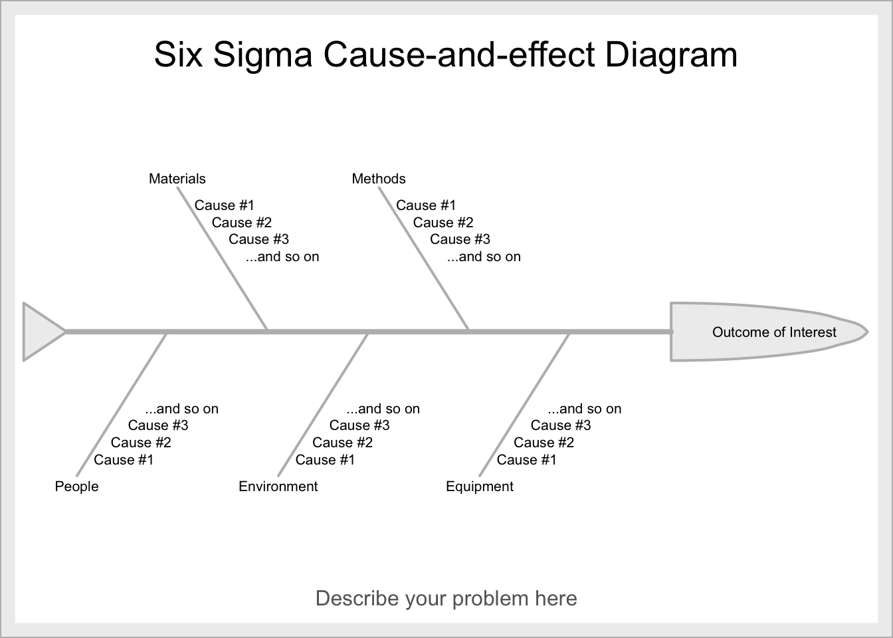
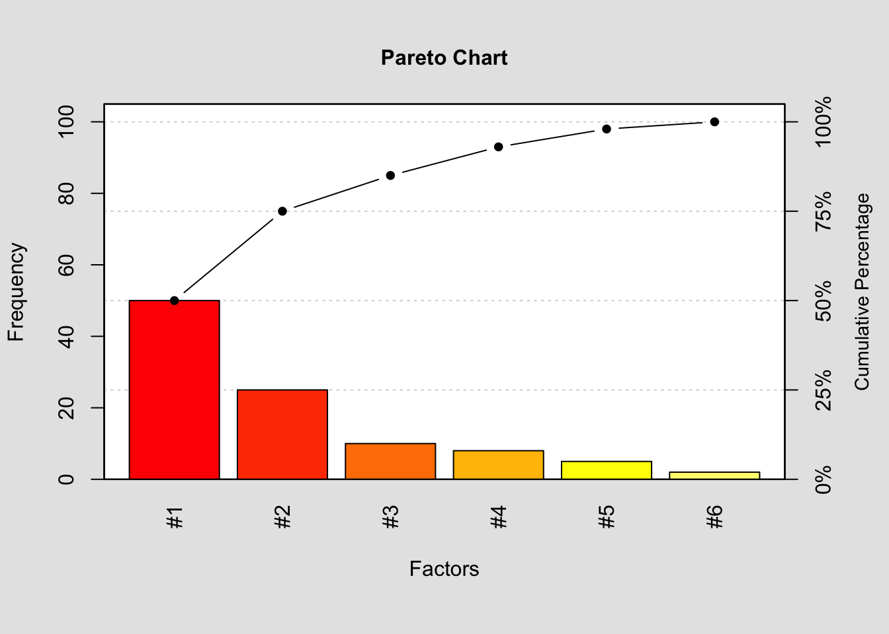
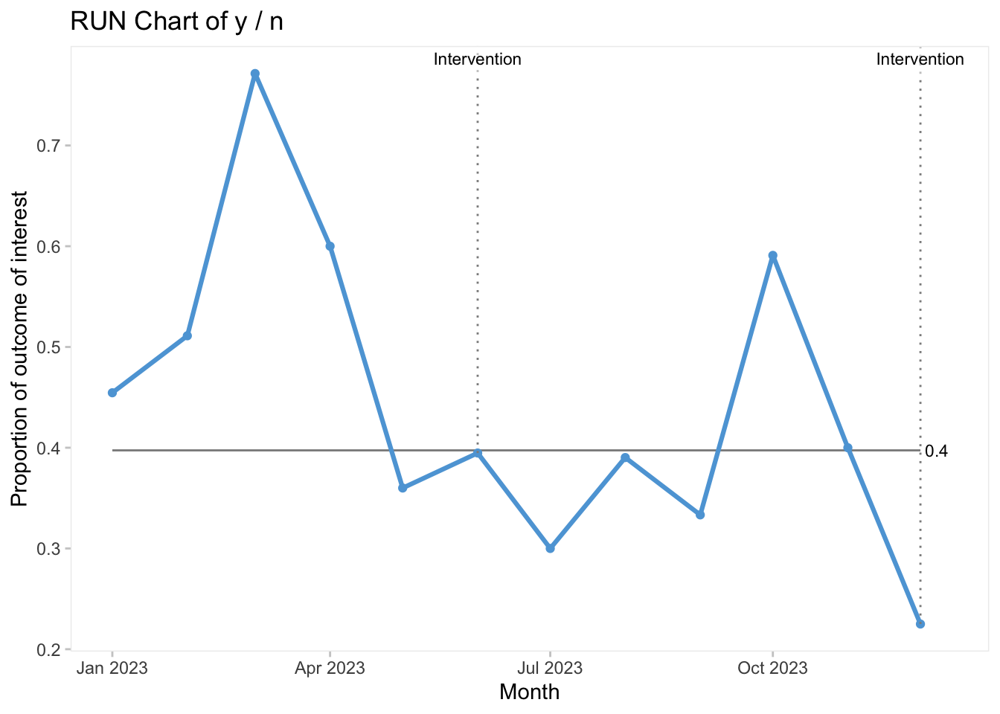

library(SixSigma)
library(qcc)
library(DiagrammeR)
library(qicharts2)Data Vis Tutorial
Overview
The following section provides a tutorial on how to produce some common QI data visualization tools utilizing open source software, called R and RStudio. For more of an introduction on this language and how to get started with it, check out the R for Health Data Science textbook by Ewen Harrison and Riinu Pius.
Once you get started with R, you can get to work on using it to visualize some of your work in QI. You will need to install and then load the following packages to get started!
Cause and Effect Diagram
Description
A Cause and Effect (a.k.a. fishbone) diagram that identifies contributors to certain effect or outcome and examine the relationship of the causes to the effect and to each other under the categories of Materials, Methods, Equipment, Environment, and People.
Background for measure
A cause and effect diagram or the Ishikawa diagram identifies the causes that contribute to the overall effect and depicts the relationship between various causes and effects. The causes for the effect are traditionally categorized by Materials, Methods, Equipment, Environment, and People. The causes that contribute to the overall effect are listed as branch bones for each category. It is generally developed with stakeholders and experts who are knowledgeable in different parts the system.
Instructions
The cause and effect diagram can be created manually or with the SixSigma package. The overall effect is labelled on the right-hand side of the page and a horizontal line is drawn across to the left starting at the effect. The categories of the causes for the effect are listed branching out from the horizontal line, traditionally including Materials, Methods, Equipment, Environment, and People. The causes that contribute to the effect are subsequently listed for each category. See the code below.
effect <- "Outcome of Interest"
causes.gr <- c("Materials", "Methods", "Equipment", "Environment", "People")
causes <- vector(mode = "list", length = length(causes.gr))
causes[1] <- list(c("Cause #1", "Cause #2", "Cause #3", "...and so on"))
causes[2] <- list(c("Cause #1", "Cause #2", "Cause #3", "...and so on"))
causes[3] <- list(c("Cause #1", "Cause #2", "Cause #3", "...and so on"))
causes[4] <- list(c("Cause #1", "Cause #2", "Cause #3", "...and so on"))
causes[5] <- list(c("Cause #1", "Cause #2", "Cause #3", "...and so on"))
ss.ceDiag(effect, causes.gr, causes, sub = "Describe your problem here")
Pareto Chart
Description
A bar chart composed of various factors that contribute to an overall effect arranged in the order from the largest to smallest contribution to the effect
Background for measure
A Pareto chart is a bar chart composed of various factors that contribute to an overall effect arranged in the order from the largest to smallest contribution to the effect. It identifies and allows concentration of improvement on the “vital few” factors that have the largest contribution to the effect and “useful many” factors that have relatively smaller contribution to the effect.
The data set for a Pareto chart can be create in table format with headings of contributing factors to an overall effect, magnitude of each factor, percentage of the total each factor represents, and cumulative percentage for each factor.
| Delay Type | Count |
|---|---|
| Factor #1 | 50 |
| Factor #2 | 25 |
| Factor #3 | 10 |
| Factor #4 | 8 |
| Factor #5 | 5 |
| Factor #6 | 2 |
| Total | 100 |
Instructions
The Pareto chart can be created manually or using a software including R with qcc package. The horizontal axis (X) is labeled with the factors contributing to the overall effect in order of largest to smallest. The left vertical axis (Y) is labeled with the unit of comparison from 0 to the total. The right vertical axis is labeled as cumulative percentage from 0% to 100%.
The magnitude of the effect is depicted using a bar chart using the unit on the left vertical axis. The cumulative percentage is demonstrated using a line graph from 0% to 100%. The “vital few” factors are identified by the factors that contribute to 80% of the cumulative percentage.
frequency = c(50, 25, 10, 8, 5, 2)
names(frequency) = c('#1', '#2', '#3', '#4', '#5', '#6')
pareto.chart(frequency,
main='Pareto Chart',
xlab='Factors',
col=heat.colors(length(frequency))
)
Pareto chart analysis for frequency
Frequency Cum.Freq. Percentage Cum.Percent.
#1 50 50 50 50
#2 25 75 25 75
#3 10 85 10 85
#4 8 93 8 93
#5 5 98 5 98
#6 2 100 2 100Driver Diagram
Description
A diagram that displays identified “primary or secondary drivers” or contributors and relationship between them in relation to the overall aim of the project
Background for measure
A driver diagram is a figure that displays relationships between the overall aim of the project, the primary drivers that contribute to achieving the aim, the secondary drivers that are sub-components of the primary drivers, and change ideas to affect the secondary driver. It is generally developed with stakeholders and experts who are knowledgeable in different parts the system.
Instructions
This can be made as a flow diagram in PowerPoint, visio, or in R with the package DiagrammR. The driver diagram can be created manually using 4 columns labelled project aim, primary drivers, secondary drivers, and change ideas sequentially. The project aim provides an objective of quality improvement. The primary drivers have direct impact on the project aim. The secondary drivers are subgroups that impact the primary drivers. For each secondary driver, change ideas and interventions can be connected to test the impact of the secondary driver.
DiagrammeR::grViz("digraph {
graph [layout = dot, rankdir = LR]
# define the global styles of the nodes. We can override these in box if we wish
node [shape = rectangle, style = filled]
aim [label = 'Aim']
pd1 [label = 'Primary Driver #1']
pd2 [label = 'Primary Driver #2']
sd1 [label = 'Secondary Driver #1.1']
sd2 [label = 'Secondary Driver #1.2']
sd3 [label = 'Secondary Driver #2.1']
sd4 [label = 'Secondary Driver #2.2']
sd5 [label = 'Secondary Driver #2.3']
ci1 [label = 'Change Idea #1.1']
ci2 [label = 'Change Idea #1.2']
ci3 [label = 'Change Idea #2.1']
ci4 [label = 'Change Idea #2.2']
ci5 [label = 'Change Idea #2.3']
# edge definitions with the node IDs
aim -> {pd1 pd2}
pd1 -> {sd1 sd2}
pd2 -> {sd3 sd4 sd5}
sd1 -> ci1
sd2 -> ci2
sd3 -> ci3
sd4 -> ci4
sd5 -> ci5
}")Run Chart
Description
A graph that depicts the current performance of a process and monitors whether interventions lead to improvement
Background for measure
A run chart is a graph that depicts data values over time with a horizontal median line dividing the data in half above and below the median value. It provides an overview of the performance of a process and identifies trends and variations in the data as a result of the quality improvement intervention.
The dataset for a run chart can be created in table format with independent variable including unit of time or quarters at which the values were collected and dependent variable including unit value or percentage. There are many ways this chart can be displayed as a control chart or split chart to demonstrate special cause variation and whether that correlates with the intervention you manipulated. All QI happens over time and in the real world, so traditional statistical before and after tests are not ideal for demonstrating change. Use a run chart instead!
Instructions
The run chart can be created manually or using a software including R with qicharts2 package. The horizontal axis (X) is labeled with unit of time or quarters sequentially. The vertical axis (Y) is labeled with the unit value or percentage of the measure of interest. The collected data points can be plotted and connected sequentially. A median line is placed as a horizontal line dividing the data points in half above or below the median value. The graph can be annotated when changes were initiated to observe the effect of interventions on the measure of interest.
y <- c(25, 23, 27, 24, 18, 15, 12, 16, 10, 13, 14, 9)
n <- c(55, 45, 35, 40, 50, 38, 40, 41, 30, 22, 35, 40)
date <- seq(as.Date("2023/01/01"),
as.Date("2023/12/31"),
by = "months")
notes <- NA
notes[6] <- "Intervention"
qic (y,
n,
x = date,
ylab = "Proportion of outcome of interest",
xlab = "Month",
notes = notes)